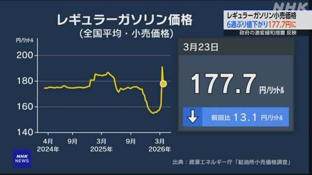

最新ニュース
1️⃣ ガソリンの値段 1Lで177.7円に下がった

ガソリンの値段が前の週より安くなりました。
石油情報センターによると、3月23日のレギュラーのガソリンの平均の値段は、1Lで177.7円でした。
今まででいちばん高かった前の週に比べて13円ぐらい下がりました。
ガソリンなどが急に高くならないように、国が石油の会社にお金を出したからです。
国は26日からは出すお金を多くして、1Lの値段を170円ぐらいにしたいと考えています。
2️⃣ 国 「飛行機は予定の時間に飛ぶように」
日本の空港で、最近、飛行機が予定どおりに飛ばないことが多くなっています。
国によると、10年前は、91%の飛行機が予定の15分以内に出発していました。しかし、2024年度は84%と少なくなっています。
原因は、外国からの客などが増えて前より多くの飛行機が飛んでいるためです。出発の時間に遅れて来る客もいます。荷物が大きすぎて棚に入らないこともあります。
国は今月、飛行機の会社に、予定どおりに飛ぶために仕事のやり方を考えるように言いました。
3️⃣ 大相撲の霧島 また大関になった
大相撲の霧島が、また大関になりました。
霧島はモンゴルの出身で2023年に大関になりました。
しかし、けがなどがあって次の年に大関から落ちていました。
霧島は、最近は体の具合がよくなって、3月大阪であった大相撲で優勝しました。
そして25日、もう一度大関になりました。
霧島は「もっと高いところに上がることができるように頑張ります」と言いました。
4️⃣ 山梨県甲府市の桜 日本でいちばん早く「満開」になった
山梨県甲府市で、桜が「満開」になりました。
花がいちばん盛んに咲いているとき、「満開」と言います。
甲府地方気象台は、春になってから気象台の庭にあるソメイヨシノという桜の木を毎日調べていました。そして、24日の午後、甲府市で桜が満開になったと言いました。
いつもの年より9日早くて、日本でいちばん早く満開になりました。
気象台の人は「山梨県には桜がきれいな場所がたくさんあるので、楽しんでほしいです」と話しました。
- 〜より
- 〜によると
- 〜まで
- 〜くらい / 〜ぐらい
- 〜から
- 〜ならない
- 〜ように
- 〜予定
- 〜こと
- 〜ため
- 〜すぎる
- 〜ため(に)
- 〜方
- 〜になる
- 〜ところ
- 〜ことができる
- 〜てから
- 〜ので
vebaev.github.io
Generated: 2026-03-25 10:54:26 UTC